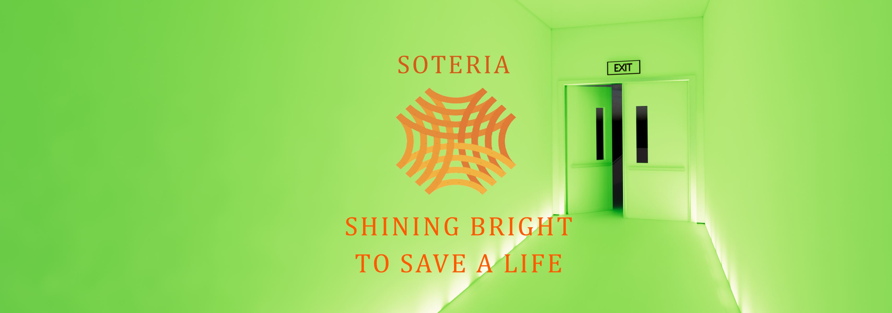

1 / 3

Caption One
2 / 3

Caption Two
3 / 3

Caption Three
Building fires lead to tremendous life and property losses. In an effort to enhance safety, we have developed a super-awesome emergency response system. Our project illustrates the application of spatial decision support to provide dynamic routing for evacuees and emergency response personnel. Soteria’s mission is to provide a safe environment for its users by notifying and guiding people away from danger zones, while providing a product that can be implemented and accessible by all.
Our solution involves using Power over Ethernet to make a smarter, more efficient evacuation protocol. Leveraging a local network and lights synced to our alarms, we can safely and efficiently guide occupants out of the building.


Our idea for our flaship product is called the Soteria. It is a smart alarm system powered by Raspberry Pi microcontrollers and some sensors. We made a scale model to demonstrate the concept.
Soteria’s mission is to provide a safe environment for its users by notifying and guiding people away from danger zones, while providing a product that can be implemented and accessible by all. We envision a future where workers, students, and families can feel safe and secure knowing that Soteria systems will actively prevent them from fire risk.

-Kina Repp